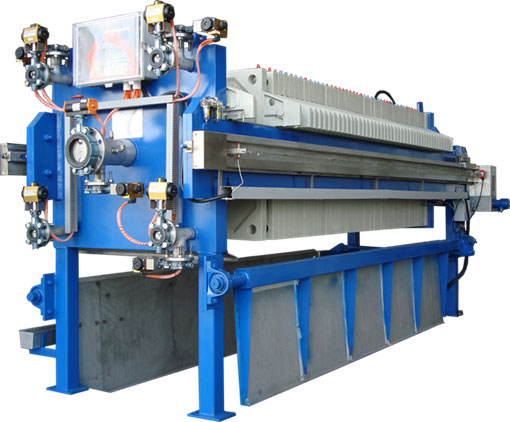
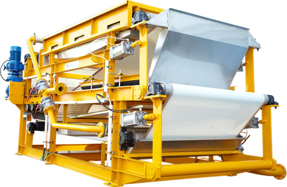
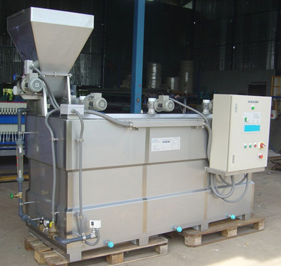

Filtering Solution (Filter & Belt Press)
Automatic filter press, namely auto filter press, is one of the solid-liquid separation machine. And automatic filter press can be used as mineral filter press, sludge filter press and so on. CAG Engineering has been developing for the filtering solution such as Filter press, Belt press, Polymer Unit , Filter Cloth, Filter Plate for various range of Industrialist. As one of the leader filtration equipment importer in Myanmar, CAG Engineering has participated in many turnkey plant in Myanmar. We are experienced in solid-liquid separation for various industries such as Starch Industry, Pulp and Paper Industry, Mining Industry, Sugar Industry, Soya bean Sauce Industry, etc.
Filter Press
Filter press, is one solid-liquid separation machine. And automatic filter press can be applied for mineral filter press, sludge filter press and so on.
-
Agitation equipment:
To mix the raw material, it can be added with flocculant as filter aid.
-
Feeding Pump:
To feed the raw material in to the filter press, with feeding pressure.
-
Filter press:
Filter cake forms filter chambers ,filter cloth is the filter media to do solid and liquid separation.
-
Reverse-blow and reverse-wash:
Reverse-blow the air or steam to decrease the cake's moisture abd the water residue in the pipes. Reverse-wash can adjust the PH value abd clean the filter chambers.
-
Working Plant:
For operation and supply working space.
-
Working Room:
To form a isolation environment, good for the outside work.
-
Auto Pull-plate:
Auto open the plates to discharge the cake.
-
Auto Washing:
Auto wash the filter cloth.
-
Bomb door:
Anti-drip and save space.
-
Belt conveyor:
To transport the cake.
-
Process control automation: PLC

Belt Press
Belt Filter Press, is one of the solid-liquid separation machine used for filter flocculation slurry ( Sludge ) by machine . Filtration of slurry or sludge must be flocculation by polymer in case of unable to flocculate should be used filter press machine for active better result.
-
Filtering, discharging, filter-cloth cleaning, all processes in one step.
-
It can filter raw material with different concentration degree.
-
Huge capacity, high filtering efficiency, and low moisture in cake.
-
Very few spare parts, low failure-rate. It is continuously working 24 hours a day.
-
It has the partly closed and total closed design to fit the raw material which is volatile.
-
Widely used in environmental protection, mining, chemical industry, metallurgy, papermaking, food, pharmaceutical, coal, etc

Polymer Unit
Polymer unit use for prepare polymer solution from solid polymer or liquid polymer for concentration of prepared polymer solution between 0.1 -0.5% w/w depend on solution viscosity use for Belt Filter Press, or Filter Press in various industry.

Filter Plate
Filter plates are made from Polypropylene with press mould type. The designing provided for filtration pressure at 15Bars. We can offer different model and material filter plate, we can also customized production.
Product Details
-
Filter plate is the mainly part which decided the performance of filter press.
-
Material: PP, Cast Iron, Stainless Steel.
-
Model: chamber Filter Plate, Membrane filter plate, Plate &Frame filter plate.
-
Temperture: Normal Filter Plate, High-temperature Filter Plate.
-
Pressure: Normal Filter Plate, High strength filter plate.
-
The number of filter plate decide filter area, the chamber volume decide the thickness of cake.
-
We have different size of filter plate, we can custom-made it.
Filter Cloth
Filter cloth is the filtering media, it separates the solid and liquid by vacuum pump, according to the theory of gravity. The efficiency of the filter press filtration is depends on filter cloth. We supply customers with many kinds of filter cloth for filter press, belt press and vacuum belt filter.
Product Details
-
Filter cloth is the filtering medium of the filtering equipments, and it is also the main spare parts.
-
Filter cloth's mesh decides on the filters' filtering precision.
-
Depending on the material's temperature, viscosity, particle size, to choose the correct type of filter cloth
-
As for the special raw material, we can customize the filter cloth, however, there is a MOQ
-
Customers shall give us the size, quality, air permeability for the filter cloth.